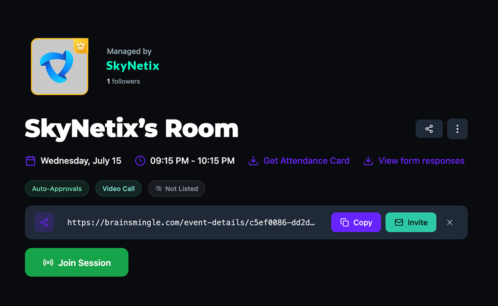
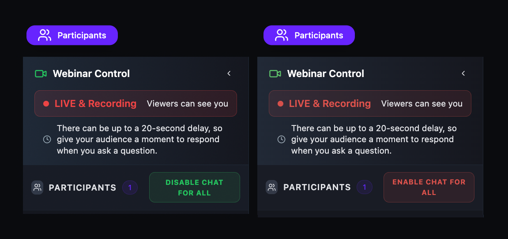

Create a session in under a minute.
Set a title and description, pick a date and timezone, choose a duration from 10 to 600 minutes, and publish. Participants see the event in their local timezone automatically.
- Free or paid — set a price in USD, EGP, or both. Attendees pay in the currency that fits them.
- Public or private — toggle between discoverable and unlisted, auto-approve or approval required.
- Tags — add up to 5 tags so members can find your session through search.
- Registration forms — require attendees to fill a custom form before joining.

Control who joins and how they pay.
Every session has three independent controls: privacy, discoverability, and pricing. Combine them however you need — a paid discoverable workshop, an unlisted free office hour, or an approval-required paid masterclass.
- Call Privacy — auto-approve or require manual approval for each attendee.
- Discoverability — listed in search and browse, or accessible via direct link only.
- Dual-currency pricing — set amounts in USD, EGP, or both. The platform handles conversion display.
- Spoken language — set the session language so attendees know what to expect.

Know your attendees before the session starts.
Attach a registration form to any session. Choose from suggested fields — full name, email, company, job title, LinkedIn URL — or add custom questions. Responses are collected and exportable before the session begins.
- Quick-add suggestions — one-click to add common fields like Name, Email, Company, Job Title.
- Custom questions — add open-ended questions specific to your event.
- Export responses — download form data to review before or after the session.

Start a call now. No scheduling required.
Instant drop-in calls start immediately — no date, no booking, no registration. Create the room, copy the link, share it, and you're live. Ideal for quick team check-ins, impromptu office hours, or ad-hoc 1-on-1s.
- One-click creation — select Instant Video Call and the room is ready.
- Copy or Invite — share the link via clipboard or email directly from the platform.
- Record on demand — not recorded by default, but you can start recording any time from the toolbar.

Host large-scale events with 500+ attendees.
Toggle Webinar Mode on and your session becomes a broadcast. Speakers appear on stage while the audience watches a livestream and interacts through chat. You control who speaks, who's on camera, and when the broadcast begins.
- Stage & audience — speakers on camera, viewers on livestream with chat.
- Pre-broadcast state — enter the room before going live. Viewers can't see you until you click Start Webinar.
- Participant permissions — control mic, camera, screen share, and chat per participant.
- Raise hand — attendees signal they want to speak. Hosts see the queue in order.

Set it once. It repeats on its own.
Schedule a session that repeats automatically — daily, weekly, biweekly, monthly, or on custom days. Set an optional end date or let it run indefinitely. Members who register for one occurrence are automatically registered for all future ones.
- Five frequencies — Daily, Weekly, Bi-Weekly, Monthly, or Custom Days.
- Custom day picker — select specific days of the week for your repeat schedule.
- Auto-registration — one sign-up covers all future sessions in the series.